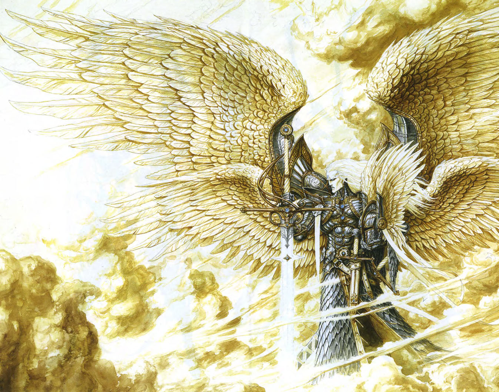

In 1983, back when computer games were still a very new field, Jon Van Canegham founded New World Computing. Three years later in 1986, they released their first game: “Might and Magic: Book One: Secret of the Inner Sanctum”. The series was highly influential in the blossoming CRPG genre as the first to feature highly detailed depictions of both inside and outside areas. The company was able to make a wider genre of games, including the unique turn-based strategy game “King’s Bounty”, which under his wife’s suggestion became the “Heroes of Might and Magic” series.
Both the original Might and Magic and the Heroes spin-off were incredibly successful considering their humble beginnings. As the RPG series continued influencing that genre, the Heroes series pushed forward with it’s unique blend of turn-based strategy, city building, and RPG elements. A second Heroes game soon followed in 1996 to praise for the updated graphics, mechanics, and music. The second game was the first I played as a kid, as it was still really simple.


The second game would quickly be overshadowed by the release of Heroes of Might and Magic 3 in 1999. This landmark entry in the series was incredibly well made and successful. Bold new art design and deeply expanded mechanics made it into a an intensely replayable experience, one still commonly accepted as not only the best in the series but also the sub-genre it created. Two expansion packs were released for the game with similar long time love being voiced by fans to this day.
Not all was well for the developer, however. 3DO had acquired New World Computing in 1996, and before filing for bankruptcy in 2003, managed to release another Heroes title in 2002. By this point the Heroes series had overtaken the rpg series, but both struggled in this era. Burgeoning 3d technologies and experimental mechanics have marked an awkward bookmark in both series’ legacies for interesting concepts that did not have the time or funding to blossom into their full potential, for better or worse.

Following the bankruptcy the rights to the entire Might and Magic franchise were swept up by Ubisoft, who quickly turned around and hired Nival Interactive, an Eastern European developer, to make another entry in the Heroes franchise. They made Heroes V, a very interesting entry in the series and my personal favorite. Utilizing fully 3D rendered environments and certain simplified mechanics, the new world of Ashan was ready to be explored. This entry is commonly accepted as the second-best game in the series, not quite as good but a worthy successor with unique execution.
Ubisoft, smelling the money, quickly green-lit two more entries for the series, both with diminishing returns. Six was plagued with bugs and glitches on launch, and an imbalance between creatures and factions. It is generally remembered as an average, disappointing game. Seven continued this trend, releasing in an unfinished state with many bugs and even missing factions. These two are probably the least played today, despite being the most recent.

The last mainline title was released in 2015, with little official word in the nearly decade since. The series is far from dead, however. 2 popular mobile ports of the second and third title have made the series more accessible. Fan mods like Horn of the Abyss for Heroes 3 and Heroes 5.5 for 5 have kept the games alive. Spiritual successors like Songs of Conquest and Hero’s hour have received praise and love from a community starving for new content. And then, in summer of 2024, Ubisoft unveiled an upcoming official entry: Heroes of Might and Magic: Olden Era, currently set to release in Q1 2026.
Heroes of Might and Magic is fondly remembered for it’s unique genre of gameplay, mixing little pieces of RPGs, resource management city builders, and turn-based strategy games. It’s a series I will never stop playing, and neither will the many other fans eagerly waiting and developing the future of the series.
